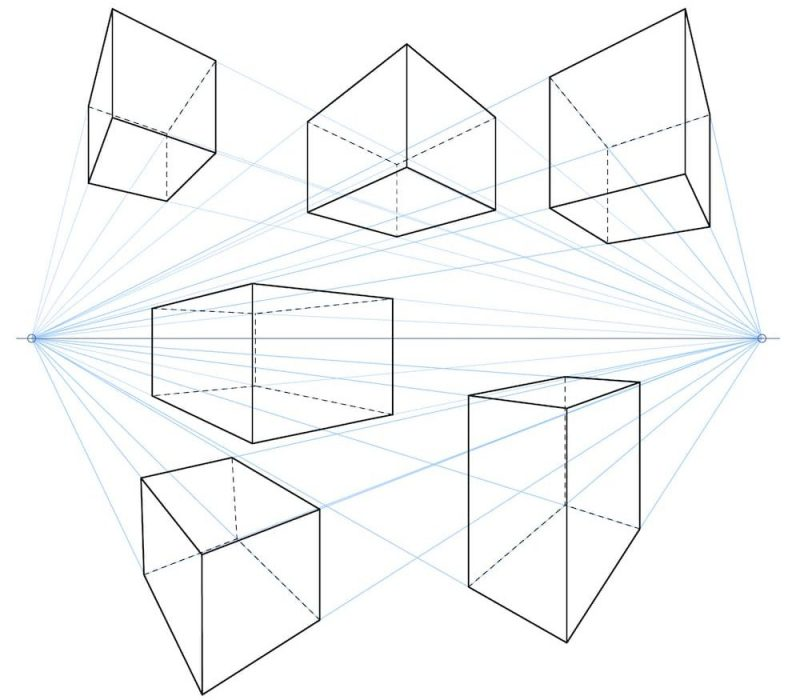
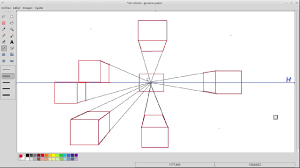
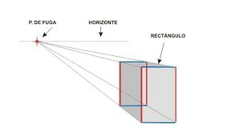
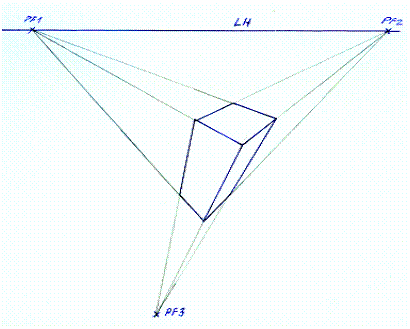

PUNTOS DE FUGA

El concepto de punto de fuga se emplea para nombrar a un cierto lugar geométrico. Los lugares geométricos son grupos de puntos que permiten satisfacer ciertas propiedades geométricas: en el caso específico del punto de fuga, se trata del lugar en el cual confluyen las proyecciones de todas las rectas paralelas a una cierta dirección en el espacio, pero que no son paralelas al plano de la proyección.
Si tomamos las direcciones ortogonales que corresponden a los ejes espaciales que solemos denominar X, Y y Z, los puntos de fuga permiten tener en cuenta una perspectiva frontal, una perspectiva oblicua o una perspectiva aérea, de acuerdo a la proyección que se realice.
.png)
Es importante señalar que el punto de fuga no sólo nos permite reproducir una escena con precisión, sino que también es una herramienta fundamental para alterar la percepción y para concebir imágenes imposibles de encontrar en la realidad.
La perspectiva se basa en la visión humana, por lo que la posición ante la escena será determinante. El hecho de que veamos el mundo bajo las leyes de la perspectiva, hace que cualquier fallo al dibujar se note enseguida, aunque la persona que está viendo el dibujo no entienda sus leyes. El dominio de la perspectiva nos permite representar correctamente todo tipo de objetos para darles una apariencia tridimensional.
- Línea del horizonte (LH): Es la altura en la que se encuentran nuestros ojos, por lo que el punto de vista será diferente si estamos de pie, sentados, subidos a lo alto de una colina, o mirando desde abajo a través de un suelo de cristal.
- Línea del suelo (LS): Es la referencia que delimita el plano del suelo. Toda la escena se representa entre la línea del horizonte y la línea del suelo.
- Puntos de fuga (PF): Se encuentran siempre en la línea del horizonte. Puede haber 1, 2 ó 3 puntos de fuga.
Esta es la perspectiva más sencilla que puedes encontrar. Cuenta con un único punto de fuga y es perfecta para quienes son principiantes y quieren tener un primer acercamiento a este tema, o también para quienes quieren dibujar habitaciones y pasillos.

Ocurre cuando una de las caras del cubo es paralela al plano de proyección, por tanto dos ejes del espacio son paralelos al plano de proyección.
Esta perspectiva cuenta con un único punto de fuga en el que todo converge. Es la forma de perspectiva más sencilla y se suele utilizar para dibujar habitaciones y pasillos.
Esta perspectiva se caracteriza por tener dos puntos de fuga que se ubican en los extremos de lo que llamamos línea de horizonte y que resultan perfectos para dibujar exteriores con edificios. El punto de vista se encuentra oblicuo a las dos direcciones del objeto a dibujar, generando una vista parcialmente ladeada, como desde una esquina.

Sistema de proyección por el que un objeto tridimensional se representa mediante un dibujo en perspectiva en el que las caras paralelas al plano del cuadro están dibujadas a escala real y todas las líneas perpendiculares al plano del cuadro tienen una inclinación cualquiera distinta de 90°
-Tiene dos puntos de fuga.
-Se utiliza mucho para dibujar exteriores con edificios.
-Todas las líneas verticales de la perspectiva oblicua son perpendiculares al horizonte.
La perspectiva aérea cuenta con tres puntos de fuga. Cuando añadimos el tercer punto de fuga lo que estamos logrando es una distorsión de la perspectiva, generando una vista hacia arriba o abajo de un objeto.

Al agregar un tercer punto de fuga encima o debajo del punto de fuga de la perspectiva de dos puntos, puedes hacer que la cámara mire hacia arriba o hacia abajo a un objeto.
La perspectiva de tres puntos de fuga se utiliza para conseguir este tipo de distorsión óptica.
La perspectiva nos ayuda a crear una sensación de profundidad, de espacio que retrocede. La perspectiva también es la estructura sobre la cual se apoya la forma de visión del hombre moderno, a partir del Renacimiento, que es cuando se instaura definitivamente en la plástica.
Click para respaunear